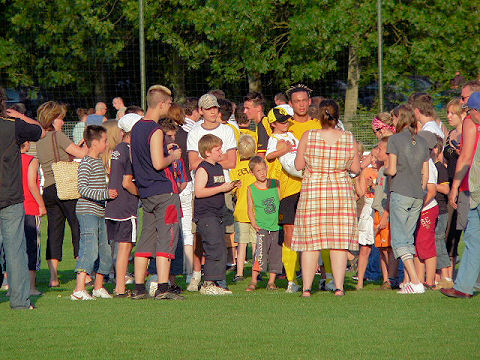
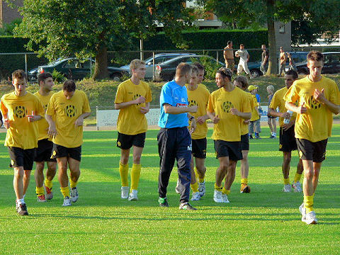
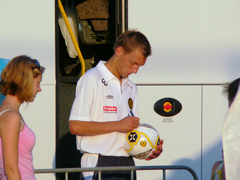

|
SV
Heerlen - Roda JC (0-7) 14 juli 2007
|
We beginnen het seizoen met Amstel bier.
Castro, Saeijs, Sonkaya, Kah, De Jong, Van Kouwen, Bodor, Sibum, Bouchiba,
Janssen, Vandamme in de nieuwe shirts met zwarte mouwen en Aevitae voorop.
Na een kwartier is het 0-1 door een doelpunt van Bouchiba.
Roda miste voorin de geblesseerden Oper, Cissé en Van Tornhout waardoor het
behoorlijk moest
sleutelen aan de opstelling.
Het was gezellig druk in sportpark Grasbroek.
Drinkpauze in de eerste helft.

Rechts van de dug-out een Fatih Sonkaya-fan: (*
Bouchiba, Bodor en Van Kouwen op één lijn.
Ruststand; 0-3.
Trainer Atteveld verlaat het veld met stoïcijnse blik en vastberaden tred.
Gerrie oefent alvast als teammanager.
Yes, you're caught on koempels candid camera...
SV Heerlen probeerde een nederlaag af te wenden door de trainer in de tweede
helft
op het dak te posteren.
Sonkaya speelde een prima wedstrijd.
Bart met kermisbier.
Mardulier deed in de tweede helft hetzelfde als wat collega Castro in de eerste
helft
deed: de 0 houden.
Aantreden na een tweede drinkpauze.
Hoekschop voor SV Heerlen.
Rechts van Mardulier, Willem Janssen.

Er waren ongeveer 1900 toeschouwers.

Na afloop van de wedstrijd (0-7) begint de handtekeningenjacht.

Uitlopen met Mark Luijpers.
Na het uitlopen heeft Mark S. een groepsfoto van spelers en supporters geregeld.
Voor een full flavour pic, mail naar
koempel@koempel.nl
Afbieren bij de laagstaande zon.
Pieter Baan komt uit de Smurfenpaddestoel.
Toch wel handig als je een beetje voetballen kunt...
Tweede helft: Mardulier (Castro), de Fauw (Kah), Bejas (De Jong), Meeuwis,
(Van Kouwen), Secerovic (Sibum).
Brothers...

Willem Janssen signeert een Rodavoetbal.
Marcel Meeuwis enzo...
© Koempels Pleasure Dome
|